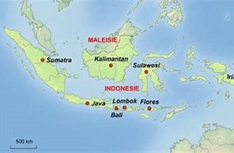
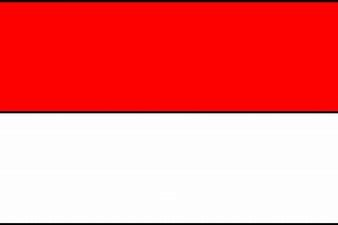

Gina van den Vrijhoef
Sinds: 1968
Uitschrijving KvK: 11-11-11
De Indische keuken
(bron: Wikipedia)
De Indische keuken is een samensmelting van de Indonesische en Chinees-Indonesische keuken met de Europese
keuken, die begon ten tijde van Nederlands-Indië. Hij is vergelijkbaar met de Kristang en Euraziatische
keuken uit Maleisië en Singapore. In tegenstelling tot wat velen denken, is de Indische keuken niet
hetzelfde als de Indonesische keuken.
De keuken ontstond doordat lokale gerechten naar Europese smaak werden gemaakt en Europese gerechten met
lokale ingrediënten. De gerechten werden gecreëerd en gegeten door Indische Nederlanders. Het koken ervan
werd meestal verzorgd door een Indonesische kokkie.
Ook de manier waarop gerechten worden geserveerd kan Indisch genoemd worden. Zo is de Indische rijsttafel
Indisch en niet Indonesisch en werd nasi goreng onder Indische invloed een hoofdgerecht in plaats van een
gerecht van restjes dat 's ochtends werd gegeten.
Los van elkaar kunnen de Indische en Indonesische keuken niet worden gezien. Niet alleen bevat de Indische
keuken invloeden van de Indonesische keuken, de Indonesische keuken bevat ook Europese invloeden zoals het
door Portugezen en mestiezen ingevoerde gebruik en teelt van Spaanse peper. Ook zijn sommige Indische
gerechten op den duur onderdeel geworden van de Indonesische keuken. Enkele voorbeelden daarvan zijn
spekkoek (Lapis legit of Spikoek), zwartzuur (Bebek Suwar-suwir), pastei (Pastel tutup) en pasteitjes
(Panada). Nieuwe gerechten, zoals babi ketjap en nasi rames, ontstonden toen Indische Nederlanders na
aankomst in Nederland na de Indonesische Onafhankelijkheidsoorlog met de toen nog weinige verkrijgbare
Aziatische producten Nederlandse gerechten op smaak brachten. Zo werd in Indonesië Nasi Rames verkrijgbaar
onder de naam Nasi Campur.
Klinkt goed toch? Daarom heb ik een selectie gemaakt van 3 gerechten waarvan ik het recept met je deel. Mijn
keuze is gebaseerd op de bekendheid, dan wel omdat ik het zelf lekker vind.

Een afbeelding van Indonesië

De vlag van Indonesië, ook
Sang Merah Putih genoemd
Garuda Pancasila: het nationale embleem van Indonesië